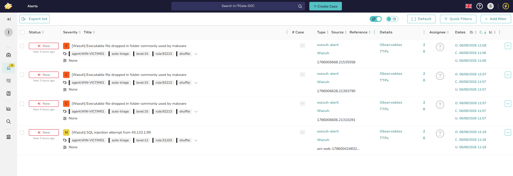
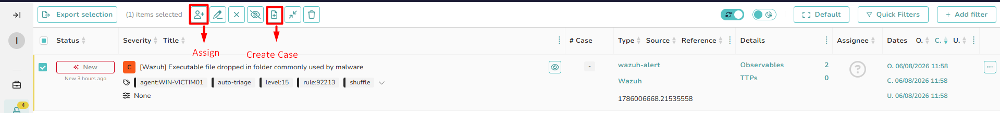
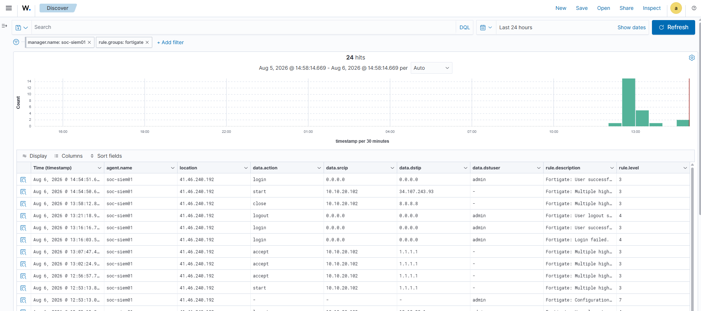
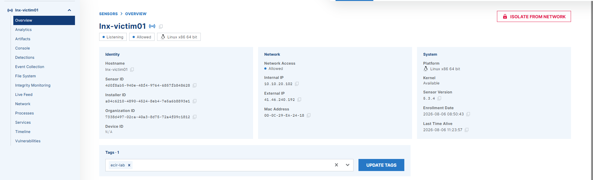

Malware Incident — One Case, Every Phase
Until now you learned the pieces one at a time. Today you run a whole incident: a real malware alert lands in your queue, and you take it from "ping" to a closed, written case — detect, triage, investigate, contain, eradicate, recover, report.
Today's agenda
| Block | Topic | Time |
|---|---|---|
| 1 | Recap Session 5 | 10 min |
| 2 | Why malware still wins · the 2026 threat picture | 20 min |
| 3 | Malware types, families & components — how to name what you see | 35 min |
| 4 | Behaviours & how a SOC detects them (signature vs behaviour) | 25 min |
| 5 | The lab you'll use — TheHive · Wazuh · Sysmon/YARA · EDR · FortiGate | 15 min |
| — | Break | 15 min |
| 6 | Tier 1 — alert → triage → case → IOCs → investigate | 45 min |
| 7 | Escalate → Tier 2 — access, contain (EDR), eradicate (DF), recover | 45 min |
| 8 | Write the report · map to MITRE ATT&CK | 15 min |
| 9 | Guided lab · challenge · homework | 20 min |
This is the first session that looks like a real shift. Every skill from S1–S5 shows up here in the order you'd actually use it. If you can run this case, you can sit in the L1 seat.
Module 4 (Analysis — endpoint & log) · Module 5 (Digital Forensics — memory & artifacts). Supporting: Maharah Tech CH02 (Malware Incidents).
What You Will Be Able To Do
Turn one malware alert into a complete, defensible incident.
- Classify malware by type, family and component — and name a modern sample from its behaviour.
- Explain how a SOC detects malware: signature, behaviour, and the three analysis categories.
- Triage a real alert in TheHive — assign it, set severity, open a case, log the IOCs.
- Investigate in Wazuh using the Sysmon process tree, Event IDs, YARA hits and FortiGate traffic.
- Decide when to escalate to Tier 2 and what to hand over.
- Contain the host with the EDR (kill process, isolate) — collect before you clean.
- Find the root cause with digital forensics, then recover from a clean snapshot and report.
Say it out loud: "Collect before you contain. Contain before you clean. Prove before you close."
Quick Recap — Session 5
Answer before you reveal.
Q1 Two of these happen very early in a response. Which order is correct?
- Contain, then collect evidence
- Eradicate, then contain
- Collect evidence, then contain
- Recover, then analyse
Q2 In TheHive, what do we call an IP or hash we attach to a case as evidence?
- A task
- An observable
- A tactic
- A responder
Q3 Isolating an infected laptop from the network is which phase?
- Containment
- Eradication
- Recovery
- Preparation
Why Malware Still Wins in 2026
Start with the problem, not the tool. If you don't feel the stakes, the alerts are just noise.
The one trend that changes your job
Infostealers feed ransomware. The 2026 pattern is a pipeline: a stealer (Lumma, Vidar, RedLine) grabs browser cookies, saved passwords and session tokens → those credentials are sold → a ransomware crew (LockBit, Qilin, Akira) logs in with them and encrypts the network. The "malware" and the "breach" are two different days and two different families.
You will rarely see the whole attack in one alert. You'll see a piece — one suspicious process, one odd DNS lookup, one YARA hit. Your job is to pull the thread and find the rest before the second family arrives. That is exactly what today's case teaches.
Polymorphism — the file changes its own hash every build, so signature-only AV misses it.
Living off the land — the malware uses powershell.exe, certutil.exe,
rundll32.exe — trusted tools you can't just block. This is why we detect behaviour, not
just files.
What Malware Is — and the Ten Types
Malware = malicious software that damages or disables systems and hands control to the attacker for theft or fraud.
Analogy. Think of a building. A virus is a sick visitor who needs someone to let them in (user interaction). A worm picks the locks itself and walks room to room (self-spreading). A trojan is a delivery van with a fake logo. A backdoor is the propped-open fire exit it leaves behind. Ransomware changes all the locks and mails you the bill.
| Type | In one line | Tell-tale behaviour you'll see in logs |
|---|---|---|
| Trojan | Malware disguised as legitimate software. | Signed-looking file from the wrong path; spawns a shell. |
| Backdoor | Hidden access that bypasses authentication. | Listening port, reverse connection to a C2 IP. |
| Rootkit | Hides itself and other malware on the host. | Kernel driver load; process the tools can't see. |
| Ransomware | Encrypts files, demands payment. | Mass file rename, shadow-copy deletion, ransom note. |
| Virus | Attaches to a file; needs user to run it. | Known file modified; spreads on open. |
| Worm | Self-replicating; spreads across the network. | Same process on many hosts; SMB/port scanning. |
| Spyware | Secretly collects keystrokes / data. | Keylogger hooks, quiet outbound data. |
| Adware | Forces unwanted ads; tracks the user. | Browser redirects, injected pop-ups. |
| Botnet | Fleet of infected "zombies" under one C2. | Beaconing to C2 at a fixed interval. |
| Crypter | Encrypts/obfuscates malware to dodge AV. | Packed binary, high entropy, no readable strings. |
Virus vs worm: a virus needs a user + a host file; a worm spreads by itself. Trojan vs backdoor: the trojan is the disguise, the backdoor is the access it leaves. Rootkit vs crypter: a rootkit hides malware on the running system; a crypter hides it from AV before it lands.
Families, Names & MalwareBazaar
A type is a category (ransomware). A family is a named strain with a known code base (LockBit). A sample is one specific file (its hash).
The families a 2026 L1 actually sees
| Family | Category | What it does | MITRE spine |
|---|---|---|---|
| Lumma / Vidar / RedLine | Infostealer | Steal browser cookies, passwords, crypto wallets, session tokens. | T1555, T1539, T1005 |
| Agent Tesla / Formbook | Stealer / keylogger | Keystrokes, clipboard, screenshots; email-delivered. | T1056.001, T1114 |
| AsyncRAT / XWorm | RAT / backdoor | Full remote control, plugin loading, persistence. | T1219, T1071 |
| PlugX | RAT (espionage) | DLL side-loading, long-term stealthy access. | T1574.002 |
| Raspberry Robin | Worm / loader | USB spread, drops the next stage. | T1091, T1105 |
| LockBit / Qilin / Akira | Ransomware | Encrypt, delete backups, extort. | T1486, T1490 |
bazaar.abuse.ch is a free repository of real malware samples and their metadata. You will use it to look up a hash from your alert and learn the family, tags and YARA rules that match it — without ever downloading the live sample. This is how you turn "unknown.exe" into "AsyncRAT" in ninety seconds.
Trojan.Win32.AsyncRAT)
Vendor names look scary but decode simply: behaviour (Trojan) · platform (Win32) · family (AsyncRAT). Different AV vendors give the same file different names — that's why the hash, not the name, is the reliable IOC.
Malware Is Modular — Its Components
Modern malware isn't one file. It's a kit the author assembles. Knowing the parts tells you what to hunt for at each stage.
| Component | Job | Where you catch it |
|---|---|---|
| Dropper | Carries & installs malware it already contains. | File-write events, new EXE in Temp. |
| Downloader | Fetches the next stage from the internet. | Outbound HTTP, DNS to new domain (FortiGate). |
| Exploit | Breaks in via a software vulnerability. | Crash → child process, odd parent (e.g. Word → cmd). |
| Injector | Runs its code inside another process. | Sysmon EID 8/10 (CreateRemoteThread, LSASS access). |
| Packer / Crypter | Compresses/encrypts to dodge AV. | High-entropy binary, no strings, YARA packer rule. |
| Payload | The actual goal: steal, encrypt, control. | Mass file rename, C2 beacon, credential access. |
A downloader reaches out to the internet to fetch more malware. A dropper already carries it inside and writes it to disk — no download needed. In logs: a downloader shows network first; a dropper shows a file write first.
How a SOC Detects Malware
Two questions: do I recognise this file? (signature) and is this behaviour wrong? (behaviour).
Match a known-bad hash, string or YARA pattern. Fast and exact — but blind to anything new or repacked. This is your AV, your hash blocklists, and your YARA rules.
Watch what the file does: Word spawning PowerShell, a process touching LSASS, mass file renames. Catches unknown malware — but needs tuning to avoid false positives. This is your Sysmon + Wazuh rules.
The three analysis categories (Maharah CH02)
| Category | Looks at | Your lab tool |
|---|---|---|
| 🟢 Live / Dynamic | The running system — ports, processes, registry, services. | EDR, Sysmon, netstat -ano. |
| 🔴 Memory / Static | A RAM dump or the binary itself, without running it. | Volatility, YARA, MalwareBazaar. |
| 🟠 Intrusion | Logs & alerts from SIEM, IDS, firewall. | Wazuh, FortiGate logs. |
Host symptoms (slow PC, pop-ups) are noisy. The reliable early indicators are network-based: a reverse connection, an odd open port, outbound traffic while nobody is at the keyboard — classic C2 (MITRE TA0011). Today FortiGate gives you that view.
The Full Arc for a Malware Incident
Everything after this page follows this exact order. Keep coming back to it — it's the map.
Isolating or rebooting the host before collecting volatile evidence. RAM holds the injected code, the C2 connection and the decryption key — all gone on shutdown. Snapshot / dump memory first, then contain.
The Lab You'll Use Today
Real tools, wired together. You'll log in with the accounts your instructor gives you in class.
| You use… | To… | Phase |
|---|---|---|
| TheHive | Receive the alert, open the case, log IOCs. | Triage |
| Wazuh (Sysmon, YARA, Event IDs) | Investigate the host — process tree, file writes, persistence. | Investigate |
| FortiGate logs | See the C2 / download / exfil traffic and block the IP. | Investigate / Contain |
| LimaCharlie EDR | Kill the malicious process and isolate the host. | Contain |
| RDP / SSH / live console + Volatility | Get on the box, find root cause, dump memory. | Eradicate / DF |
| VM snapshot | Restore the machine to a known-clean state. | Recover |
Your instructor shares the TheHive / Wazuh URLs and your analyst login in class. Never post lab credentials in chat, screenshots or your report — redact them like you would in a real SOC.
Tier 1 — The Alert Lands
16:12. Your queue lights up. Before you touch anything, read the alert like a first responder reads a call.
Title : [Wazuh] Executable file dropped in folder commonly used by malware
Severity : Critical (level 15)
Source : Wazuh rule 92213 · agent WIN-VICTIM01 · tag shuffle/auto-triage
Host : WIN-VICTIM01 (10.10.20.101)
Also fired : YARA active-response match (rule 108001) on the same file
Time : 2026-08-06 11:58
Observables: 2 (file hash · remote IP)
auto-triage / shuffle tags (source: lab capture).Read it in this order
- What fired? An executable was dropped in a folder malware commonly uses — and YARA matched it. Two independent detections on the same file = high confidence, not a false positive.
- Where? One host: WIN-VICTIM01. Scope starts at "one endpoint" until proven wider.
- How bad? Level 15 = critical. This jumps the queue over the level-12 SQLi alert below it.
- What do I already have? Two observables already attached (a hash and a remote IP). Those are your first IOCs — enrich them before you do anything else.
Your first job is not to fix anything — it's to decide if this is real and preserve what you were given. Curiosity, not panic. Every fact you note now is a fact you don't have to re-find at 2 a.m.
Triage → Assign → Open the Case
Turn an alert into a tracked investigation. This is the moment you take ownership.
- Assign it to yourself. An unassigned alert is nobody's problem. Your name goes on it now.
- Promote the alert to a case. Title it plainly:
Malware on WIN-VICTIM01 — YARA hit + suspicious child process. - Set severity, TLP and PAP. High severity;
TLP:AMBER(internal + need-to-know);PAP:GREEN(you may actively investigate the IOCs). - Add the lifecycle tasks so the case tracks the whole arc:
"Investigate host in Wazuh" · "Confirm C2 in FortiGate" · "Escalate to L2" · "Contain (EDR)" · "Eradicate — find root cause" · "Recover from snapshot" · "Write report"
Creating the case = Detection & Analysis. You are not containing yet. Naming the phase out loud keeps you from skipping "collect evidence."

Log the IOCs — Then Enrich Them
An IOC you didn't write down is an IOC you'll lose. Add each one to the case as an observable.
| Observable | Value (from the alert) | Enrich with |
|---|---|---|
| File hash (SHA256) | 275a021b… | MalwareBazaar · VirusTotal → family + tags |
| Filename | payload.exe in C:\ShadowGate-Sandbox\ | Path is abnormal → suspicious |
| Remote IP | 162.243.103.246 | AbuseIPDB · Cortex → reputation, ASN, geo |
| Domain | testmynids.org | WHOIS · passive DNS → age, category |
Paste the SHA256 into MalwareBazaar. If it's known, you'll get the family, tags and matching YARA rules. Mark each observable "is IOC" and tag it. In TheHive with Cortex wired in, the analyzers run these lookups for you — one click per observable.
This is the exact enrichment skill from Session 4 (threat intel), now inside a live case. The verdict you build here — "known AsyncRAT sample, C2 IP flagged malicious by 40+ vendors" — is what justifies escalation.
Investigate — Read the Host in Wazuh
The alert told you what. Now build the story: how did it get here, and what did it do?
Rebuild the process tree (Sysmon EID 1)
explorer → hidden encoded PowerShell — users don't launch that.The Event IDs that tell the story
| Source · ID | Meaning | What it proves here |
|---|---|---|
| Sysmon 1 | Process creation (+ command line) | Hidden, encoded PowerShell launched from explorer. |
| Sysmon 11 | File created | payload.exe written to a Temp/sandbox path. |
| Sysmon 3 | Network connection | Outbound to the C2 IP — the download/beacon. |
| Sysmon 13 | Registry value set | Run key ShadowGateLoader → persistence. |
| Security 4688 | Process creation (+ cmdline) | Corroborates the PowerShell command line. |
| Wazuh 108001 | YARA active-response match | The file matched a malware signature on write. |
# everything from the victim in the incident window
agent.name:WIN-VICTIM01 and rule.groups:sysmon
# the YARA hit that started it all
rule.id:108001
# persistence: registry Run key writes
data.win.eventdata.targetObject:*\\CurrentVersion\\Run\\*Confirm the network story in FortiGate
Pivot to the firewall logs (S4 skill). Filter on the victim IP and the C2 IP. You should see the outbound connection at 16:12 — same second as the process tree. Two independent sources agreeing = a confirmed finding, not a guess.

rule.groups: fortigate and read data.srcip → data.dstip. Here the victim 10.10.20.102 reaches out — the same story the process tree told, confirmed by a second source (source: lab capture)."Confirmed malware on WIN-VICTIM01. Known-bad hash, encoded PowerShell from explorer, Run-key persistence, and active C2 to a flagged IP. Scope: one host so far. Recommend escalation to L2 for containment."
Escalate — and Hand Over Cleanly
Escalation isn't "I give up." It's "I've confirmed it; the next action needs L2's access and authority."
- Malware is confirmed (not a maybe).
- The response needs containment — isolating a host, killing a process, blocking an IP.
- There are signs of spread, credential theft, or ransomware behaviour.
- It touches a critical asset or crosses a policy threshold.
- It's a clear false positive you can close with evidence.
- You haven't finished triage — escalating a half-read alert wastes L2's time.
The handoff note (paste into the case)
SUMMARY : Confirmed malware, WIN-VICTIM01 (10.10.20.101), 16:12.
IOCs : payload.exe SHA256 275a021b… · C2 162.243.103.246 · Run key "ShadowGateLoader"
EVIDENCE: Wazuh rule 108001 (YARA) · Sysmon 1/3/11/13 · FortiGate outbound to C2
SCOPE : 1 host confirmed; no lateral movement observed yet
DONE : Case opened, 4 IOCs enriched (C2 flagged malicious), tasks created
ASK : L2 to contain (EDR isolate + kill), then eradicate & recover
NOT DONE: Nothing contained yet — evidence preserved for collectionTelling L2 what you didn't touch is as important as what you did. It tells them the memory is still intact and safe to collect — the golden evidence hasn't been destroyed.
Tier 2 — Access & Contain
Now you touch the machine. But remember the order: collect volatile evidence, then contain.
Step 1 — Collect before you cut the cord
- Snapshot the VM (or dump RAM with WinPMEM/DumpIt). This freezes memory — injected code, the live C2 socket, keys.
- Get on the box — RDP or the live console — and capture quick volatile state before isolation:
netstat -ano :: live connections + owning PID tasklist /v :: running processes schtasks /query /fo LIST /v :: scheduled-task persistence reg query HKCU\SOFTWARE\Microsoft\Windows\CurrentVersion\Run
Step 2 — Contain with the EDR
In the LimaCharlie console, find WIN-VICTIM01 and take two actions:
- Kill the malicious process — the PID you confirmed from the Sysmon tree (the hidden PowerShell / payload.exe). This stops the C2 immediately.
- Isolate the host — network isolation cuts all traffic except the EDR channel, so you keep control while the malware loses its C2. This is the containment action.
EDR isolate = host-level, surgical, reversible from the console. FortiGate block
= network-level; add the C2 IP to SOC_BLOCKLIST so every host is protected, not just this
one. In a real incident you often do both: isolate the victim, block the IP for the fleet.

Isolating a production server has a business cost. In a lab you always isolate; in the real world you weigh impact and get sign-off. The teaching point: containment is where SOAR gets dangerous — always gate automatic isolation on a human approval.
Eradicate — Find the Root Cause with Forensics
Deleting payload.exe is not eradication. Eradication is proving how it got in and
removing every foothold — so it can't come back.
Hunt every persistence foothold
| Foothold | Where to look | MITRE |
|---|---|---|
| Registry Run key | HKCU\…\CurrentVersion\Run\ShadowGateLoader | T1547.001 |
| Scheduled task | schtasks → ShadowGate-Update (Event 4698) | T1053.005 |
| Dropped files | C:\ShadowGate-Sandbox\ — payload, loader, notes | T1105 |
| Service install | Event 7045 — new service | T1543.003 |
Memory forensics — the deep proof (Volatility)
From the RAM dump you took before containment, run Volatility to see what disk alone can't:
vol.py -f WIN-VICTIM01.raw windows.pslist # processes at capture time
vol.py -f WIN-VICTIM01.raw windows.netscan # the live C2 socket
vol.py -f WIN-VICTIM01.raw windows.malfind # injected code in memory
vol.py -f WIN-VICTIM01.raw windows.cmdline # the full malicious command line"A hidden encoded PowerShell launched from explorer downloaded payload.exe from
162.243.103.246, which established persistence via a Run key and a scheduled task, and beaconed to
C2." That sentence is the eradication checklist — remove each item it names.
Malicious files gone · Run key removed · scheduled task deleted · service removed · C2 blocked · and you've confirmed no other host shows the same IOCs (search all agents in Wazuh for the hash and C2 IP).
Recover — Back to a Known-Clean State
The safest clean-up of a compromised machine is often not to clean it — it's to restore it.
Two recovery paths
Revert WIN-VICTIM01 to the CLEAN-BASE snapshot — the known-good state taken before the
attack, with agents and telemetry already installed. Fast, total, and you know exactly what you get.
When there's no trusted snapshot, or a rootkit may sit below the OS, you rebuild from a golden image and restore data from clean backups. Slower, but the only safe option against deep persistence.
Verify before you call it recovered
✅ Verification
- Host reverted to
CLEAN-BASE; agents Active again in Wazuh & the EDR. - No Run key, scheduled task or dropped files present.
- No outbound connections to the C2 IP (check FortiGate + Wazuh).
- Un-isolate the host in the EDR only after the above pass.
- Monitor for 24–48h for re-infection (the second family).
Returning a host to the network before you've verified it's clean is how an incident reopens. Recovery has a checklist for the same reason containment does — feelings aren't evidence.
Write the Report · Map to MITRE
A case nobody can read didn't happen. The report is how the SOC learns and how the next analyst starts faster.
The one-page incident report
| Section | What goes in it |
|---|---|
| Summary | One paragraph: what happened, when, impact, current status. |
| Timeline | Timestamped events: first alert → C2 → persistence → contain → recover. |
| IOCs | Hash, C2 IP, domain, Run-key name, task name — a copy-paste block for blocking. |
| Root cause | The one-sentence "how it got in and what it did." |
| Actions taken | Contained (EDR isolate + FortiGate block), eradicated, recovered from snapshot. |
| Lessons / gaps | What detection or control would have caught this earlier. |
Map the case to MITRE ATT&CK
| Tactic | Technique | Evidence in this case |
|---|---|---|
| Execution | T1059.001 PowerShell | Hidden encoded PowerShell from explorer. |
| Command & Control | T1105 Ingress Tool Transfer | Download of payload.exe from C2. |
| Persistence | T1547.001 Run Key · T1053.005 Scheduled Task | ShadowGateLoader + ShadowGate-Update. |
| Credential Access | T1003.002 SAM | SAM/SYSTEM hive export. |
| Impact | T1486 Encrypt · T1490 Inhibit Recovery | .shadowlock rename + shadow-copy delete. |
| Defense Evasion | T1562.001 Disable Tools | Defender real-time toggled off. |
Detect → triage → investigate → escalate → contain → eradicate → recover → report. Every session before today was one of these boxes. Now you can chain them.
Guided Lab — Operation Shadow Gate
The instructor fires a real attack from Kali against a deliberately-weakened Windows victim. You watch the alerts arrive and run the arc live.
On WIN-VICTIM01, Defender real-time protection is turned off and the box is left intentionally
exposed so the payload detonates and the telemetry flows. The attack script
(docs/lab/attack-scripts/attack-windows.ps1) runs three attack windows across a simulated day.
Lab only — all encryption/registry changes touch the sandbox folder and clean up at the end.
- Instructor detonates. Run
attack-windows.ps1in an Administrator PowerShell on the victim. - Watch the queue. Within seconds, Wazuh raises alerts (YARA 108001, Sysmon process/registry/network). One promotes to a TheHive alert.
- Run Tier 1. Assign → open case → log the 4 IOCs → rebuild the process tree in Wazuh → confirm C2 in FortiGate.
- Escalate & respond. Snapshot/dump memory → isolate + kill in the EDR → find persistence → revert to CLEAN-BASE.
- Report. Fill the one-page template and the MITRE table.
✅ What right looks like
- Your case has ≥ 4 IOCs, ≥ 3 completed tasks, and a MITRE technique attached.
- You can name the parent process of payload.exe and the C2 IP from evidence.
- The host is isolated in the EDR, then recovered and verified clean.
Shadow Gate hides three windows in a normal day — A 09:20 logon brute-force → success, B 13:30 registry persistence + PowerShell download, C 16:10 credential theft + ransomware. Correlate on time + account + IP + process, not a single indicator.
Challenge — Investigate Operation Shadow Gate
Answer every question from the evidence in Wazuh / TheHive / FortiGate. Sequential — a wrong answer sends the next hunt to the wrong place.
A YARA alert fired on WIN-VICTIM01 at 16:12. Reconstruct the full attack across all three windows, name the techniques, and recommend the response. Screenshot each answer's evidence.
Q1 What is the parent process of the malicious PowerShell?
- services.exe
- explorer.exe
- winlogon.exe
- cmd.exe
Q2 In Window A, which source IP brute-forced then successfully logged on?
- 10.10.20.101
- 162.243.103.246
- 198.51.100.24
- 10.10.20.200
Q3 Name a persistence mechanism the malware installed.
- Run key "ShadowGateLoader"
- A new local admin user
- A browser extension
- A kernel driver
Q4 Which action shows intent to stop recovery (ransomware behaviour)?
- Disabling the firewall
- Clearing the browser cache
- Creating a scheduled task
- Deleting volume shadow copies (vssadmin)
Q5 Before isolating the host, what must you do first?
- Delete payload.exe
- Collect volatile evidence (snapshot / RAM dump)
- Reboot the machine
- Run Windows Update
① Give the SHA256 of payload.exe and its MalwareBazaar family. ② Give the C2 IP and its AbuseIPDB verdict. ③ Write the one-sentence root cause. ④ List the exact eradication steps you took.
Homework
One hands-on investigation and two free rooms. Progress saves in this browser.
Finish the Shadow Gate investigation report
RequiredDue · 13 AugComplete the challenge (P21) end to end and submit the one-page report + MITRE table. Every claim must have a screenshot from Wazuh / TheHive / FortiGate.
TryHackMe — MAL: Malware Introductory (free)
RequiredDue · 13 AugPractical intro to static & dynamic malware analysis and the tools involved — reinforces today's theory with hands-on hashing, strings and PE inspection.
TryHackMe — Intro to Malware Analysis (free)
OptionalDue · 16 AugWalks the analysis workflow on a sample. Good extra reps before we deepen memory forensics in a later DFIR session.
Look up a real sample on MalwareBazaar
OptionalDue · 16 AugBrowse MalwareBazaar, pick one 2026 family from P06 (e.g. AsyncRAT, Lumma), and read its tags + YARA rule. Do not download any sample.
Free rooms only — you never need a subscription for homework. In-class premium rooms are instructor-led. Progress is saved in this browser.
References
Primary source — INE eCIR v2
| Topic | INE module |
|---|---|
| Endpoint & log analysis, Sysmon channels | Module 4 |
| Memory acquisition & forensics, artifacts | Module 5 |
| IOCs, enrichment, triage & escalation | Module 3 |
Supporting source — Maharah Tech (Incident Handling)
Chapter 2 — Malware Incidents: types & components, detection techniques (live / memory / intrusion), and the containment–eradication–recovery flow. Diagrams in this session were redrawn in the ITGate theme.
Threat landscape (2026)
- MalwareBazaar (abuse.ch) — sample & family lookup, YARA rules
- MITRE ATT&CK — Enterprise matrix (technique references above)
- Current families: infostealers (Lumma, Vidar, RedLine), RATs (AsyncRAT, XWorm), ransomware (LockBit, Qilin, Akira)
Homework labs — TryHackMe (free)
INE is the primary reference for the exam. Maharah and THM reinforce — where wording differs, INE wins. Screenshots are credited to their source and used as figures only. Never republish room content verbatim.
Create a homework task
Add your own lab, reading or exercise to this session's homework list.
Navigate with ← → arrow keys